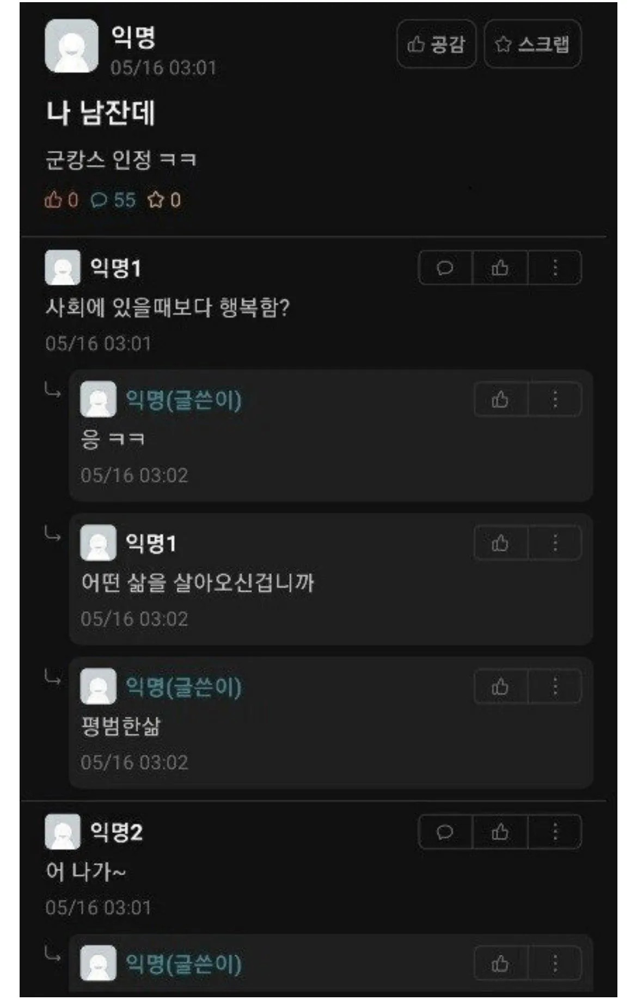
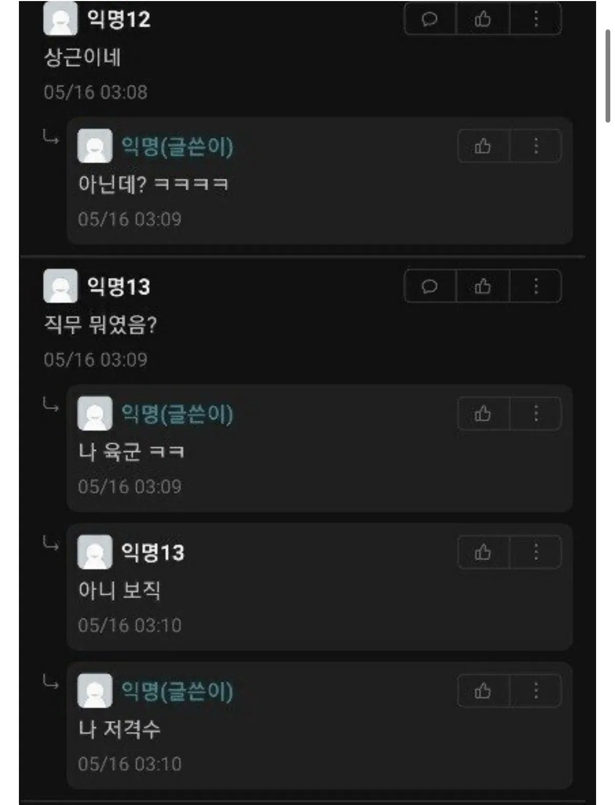
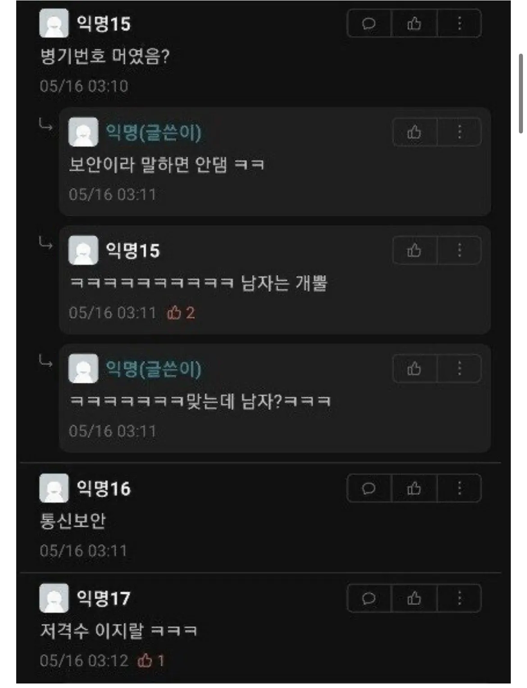
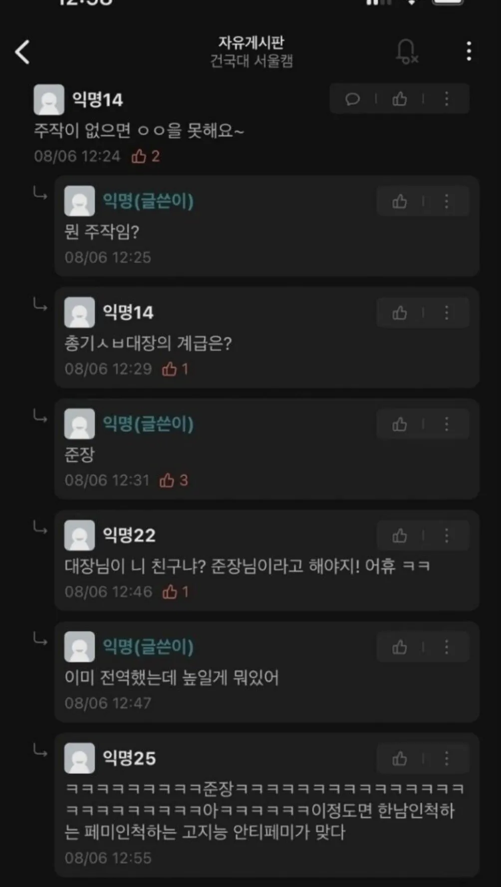
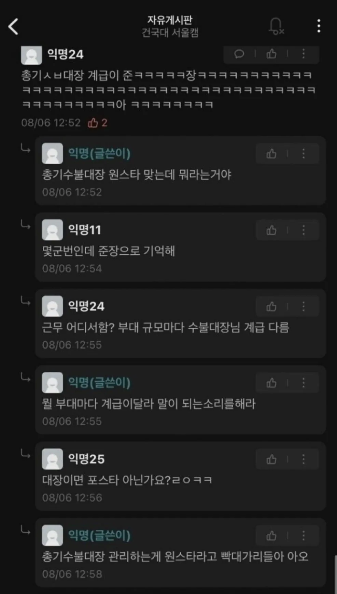

MC스나이퍼 ㄷㄷ


자매품 건국대 총기수불대장ㅋㅋㅋㅋ



MC스나이퍼 ㄷㄷ


자매품 건국대 총기수불대장ㅋㅋㅋㅋ
근데 육군에 저격수 보직 진짜 있냐?
일반 병사들은 못하고 부사관들이 하려나?
중대장이 진담 반, 농담 반으로 있다고 해서 나도 헷갈린다..
보통 특전에서 많이운용하긴함. 훈련소랑 자대에서도 뽑히는놈봄
특공 이하는 지정사수 개념으로 운영함
진짜있음 gop초소 돌다보면 간간히 총도보임
글게 하더라도 보통 부사수일텐데
있대
있음 우리 대대에 있었음
일반적인 강원도 예비사단(15군번) 보병대대 였고
저격부사관 + 병사 1~2 로 이루어져 있었음
K14인가 간지나더라 훈련때 경계서다가 가방한번 메봤는데
개무거웠던 기억 있음
저격반
예전에 국기검 갔을때 듣기론 저격병이라고 하는 아저씨가 있긴했는데. 근데 뭐 총은 특별한건없고 훈련때 주로 어디 안들키게 숨어있는거랬고.
수방사예하 직할부대였는데 그거까진 기억 안나네
맞으니까 같이 가자
솔직히 군대 갔다왔는데 총기수불대장은 나도 모름 ㅋㅋ 총번도 군대 때도 못 외웠었고
웃자고 하는 소리지...?
나도 k9대대였는데 수불대장 안 썼고 총번도 짬질당하던 일병 이후로는 안 외웠다 수불대장은 행정병이 일괄 관리했거든 개인소총은 위에 전역하면 총 계속 바꿔대서 짬질용으로나 외우게 시켰지 상병때부터는 안 외움
...그니까 수불대장이란게 뭔진 알잖아
뭔지는 알지만 난 거의 못 봄 군생활하면서ㅋㅋㅋ
난 뭔지도 몰랐어. 저 짤 예전에 보고 그때 첨 알았음. 단어로 대충 유추해서 총을 넣고 빼고 한 기록을 하는 대장? 정도로 이해는 했고
아니 진짜 모름.. 총번도 안 외워도 문제가 없었어 12군번
사회(입대 전) 보다 군대가 편하다 라고 하는 사람은 딱 한명봄
통칭 학사님
난 나이롱 냉담이라 틀린게 있을 수 있음
천주교가 잘 맞아서 보직 군종 아니고 그냥 주말마다 봉사형식으로 성당 가서 하루종일 있곤했는데
우리 중대 선임중에(소대는 달랐음) 신학교를 다니는 예비신부? 선임이 있었음
교인들은 항상 그 선임을 학사님이라고 불렀고, 그냥 군종병 병종을 달고 오지 않은 병사를 학사님이라고 하는구나 하고 말았음 더 알아보진 않고
가끔 신부님께서 군대가 편하냐 거기가 편하냐, 하고 그 선임한테 여쭤보시면
: 아시다시피, 저는 여기가 편합니다
라고 하더라 ㅋㅋ 기억에 남았음 좋은 선임이었는데
최전방부대에서는 초소마다 2돌격병 1스나 한명씩 배치해 두는 게 좋지.
저지능 고지방
어 나 총기수불대대장인데 저게맞다
군캉스 맞다 다같이 가자.